1
Clean pipe roughly, cut at right angle with pipe cutter and if necessary deburr edges.
Clean pipe roughly, cut at right angle with pipe cutter and if necessary deburr edges.


2
Check pipe diameter with a circumferential measuring band before and after peeling operation. Consider standard data.
Check pipe diameter with a circumferential measuring band before and after peeling operation. Consider standard data.

3
Measure area which must be peeled on the still packed product with a yardstick.
Measure area which must be peeled on the still packed product with a yardstick.
4
Measure area which must be peeled (electrofusion fitting plus 1 cm) with a yardstick on the pipe and mark outside lines with a permanent marker.
Measure area which must be peeled (electrofusion fitting plus 1 cm) with a yardstick on the pipe and mark outside lines with a permanent marker.
5
Peel pipe with a rotary peeler.
Note min. shaving thickness of 0.2 mm as well as max. allowable wall thickness reduction.
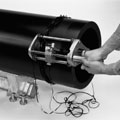Peel pipe with a rotary peeler.
Note min. shaving thickness of 0.2 mm as well as max. allowable wall thickness reduction.
 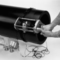
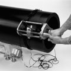6
Clean pipe only in the peeled area with PE cleaner and lintfree, colourless and clean cloth in circumferential direction, let the cleaner exhaust.
Do not touch the fusion zone and avoid contamination.
Clean pipe only in the peeled area with PE cleaner and lintfree, colourless and clean cloth in circumferential direction, let the cleaner exhaust.
Do not touch the fusion zone and avoid contamination.

7
Mark insertion depth with yardstick and permanent marker on the pipe.
Mark insertion depth with yardstick and permanent marker on the pipe.

8
Without touching the fusion zone, remove product immediately before the installation from packaging.
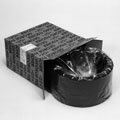Without touching the fusion zone, remove product immediately before the installation from packaging.
 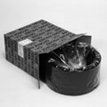
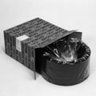9
Take care for low stress installation. Secure the pipe and coupler against dislocation.
Take care for low stress installation. Secure the pipe and coupler against dislocation.
10
Without touching the fusion zone, push electrofusion fitting onto the pipe. To control insertion depth and dislocation of the coupler, the done marking on the pipe serves.
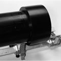Without touching the fusion zone, push electrofusion fitting onto the pipe. To control insertion depth and dislocation of the coupler, the done marking on the pipe serves.
 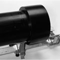
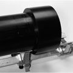11
Without touching the fusion zone, push second pipe end up to the done marking.
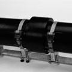Without touching the fusion zone, push second pipe end up to the done marking.
 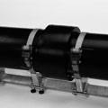
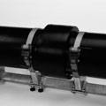12
Fuse in accordance to the user manual of the fusion unit.
Control and supervise fusion process.
Fuse in accordance to the user manual of the fusion unit.
Control and supervise fusion process.

13
During and after fusion, check fusion indicators on the product. After fusion check message on the fusion unit. Afterwards remove fusion cables.
During and after fusion, check fusion indicators on the product. After fusion check message on the fusion unit. Afterwards remove fusion cables.
14
Ensure fusion area remains stress free and avoid dislocation until cooling time has elapsed.
Ensure fusion area remains stress free and avoid dislocation until cooling time has elapsed.
15
Wait the minimum cooling time for pressure test, afterwards conduct pressure test.
Wait the minimum cooling time for pressure test, afterwards conduct pressure test.